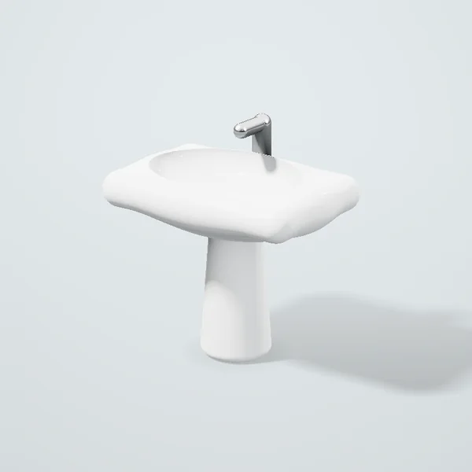

Pyedestalli rakovina 60 sm

720 000 so‘mdan / komplekt
Silliq sirlangan sanfayans, oson yuviladi. Örnatiş uçun santexnik kerak — mahsulot bilan birga buyurtma qiliş mumkin.
- Ölçov
- komplekt
- Vazni
- 18 kg
- Mamlakat
- Germaniya
Toşkent böylab Yandex yetkazib beriş: 15 kg gaça kuryer, oğir buyurtmalar uçun yuk taksi. Dökondan olib ketiş bepul.
Dökonlardagi narxlar
| Dökon | Narx | Mavjudligi |
|---|---|---|
| Santex Dom Mirzo Uluğbek | 720 000 söm | bor |